La Visualización como Argumento Sociológico y la Gramática de Gráficos
Unidad 4: Estadística Descriptiva Univariada
2025-11-03
Objetivos de la Sesión de Hoy
- Comprender la visualización no solo como una ilustración, sino como una forma de argumento sociológico.
- Analizar cómo “visualizaciones icónicas” han redefinido debates sobre la desigualdad.
- Demostrar por qué los estadísticos resumen por sí solos pueden ser engañosos.
- Aprender y aplicar un conjunto de mejores prácticas para la creación de gráficos claros y honestos.
- Introducir la “Gramática de Gráficos” y sus componentes (
data,aes,geom). - Ampliar el repertorio en
ggplot2con una herramienta clave para la comparación: el faceting.
1. La Visualización como Argumento Sociológico
Más Allá de la Ilustración
La visualización de datos no es un paso meramente técnico o decorativo al final de un análisis. En sociología, las visualizaciones más influyentes son, en sí mismas, argumentos teóricos condensados.
Tienen el poder de:
- Contar una historia compleja de forma simple y memorable.
- Desafiar narrativas dominantes sobre el progreso y la sociedad.
- Redefinir el debate público y académico.
Como argumenta Mike Savage en The Return of Inequality: Social Change and the Weight of the Past (Harvard University Press, 2021), estas “visualizaciones icónicas” no solo muestran datos, sino que proponen una nueva forma de ver el mundo social.
Savage, M. (2021). The Return of Inequality: Social Change and the Weight of the Past. Harvard University Press. https://doi.org/10.2307/j.ctv31xf633
La Curva en U de Piketty (La Desigualdad en el Tiempo)
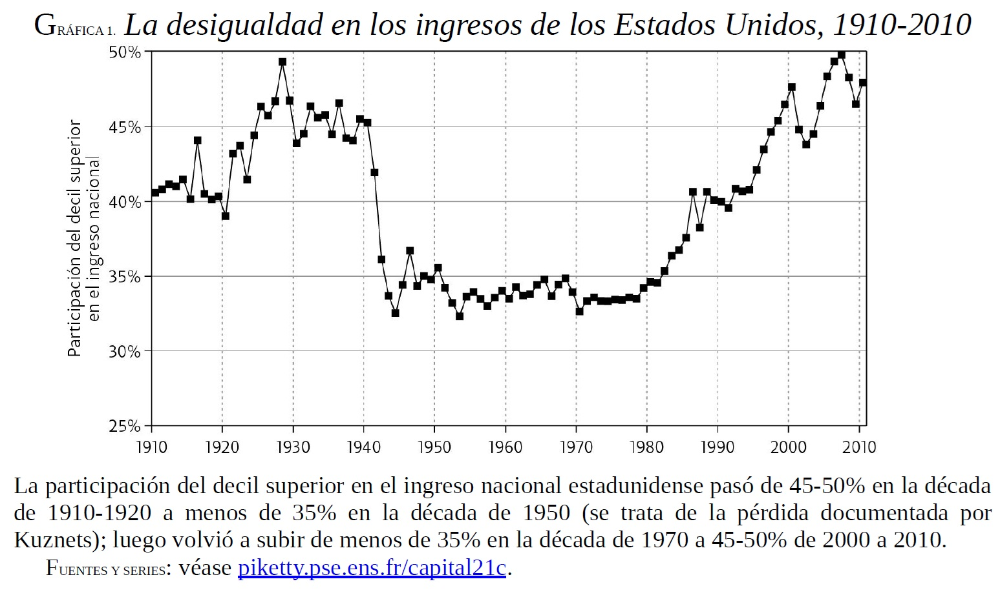
La Curva en U de Piketty (La Desigualdad en el Tiempo)
El Gráfico: Una simple línea del tiempo (sparkline) que muestra la participación del 1% más rico en el ingreso nacional de EE.UU. a lo largo del siglo XX.
El Argumento Visual: La forma de “U” es una poderosa narrativa. Desafía la idea modernista de un progreso lineal y constante hacia una mayor igualdad. El gráfico argumenta que, tras un período de relativa equidad a mediados de siglo, estamos “regresando” a los niveles de desigualdad de la “Gilded Age”. Hace visible “el peso de la historia” en el presente.
El Espacio Social de Bourdieu (La Desigualdad en el Espacio)
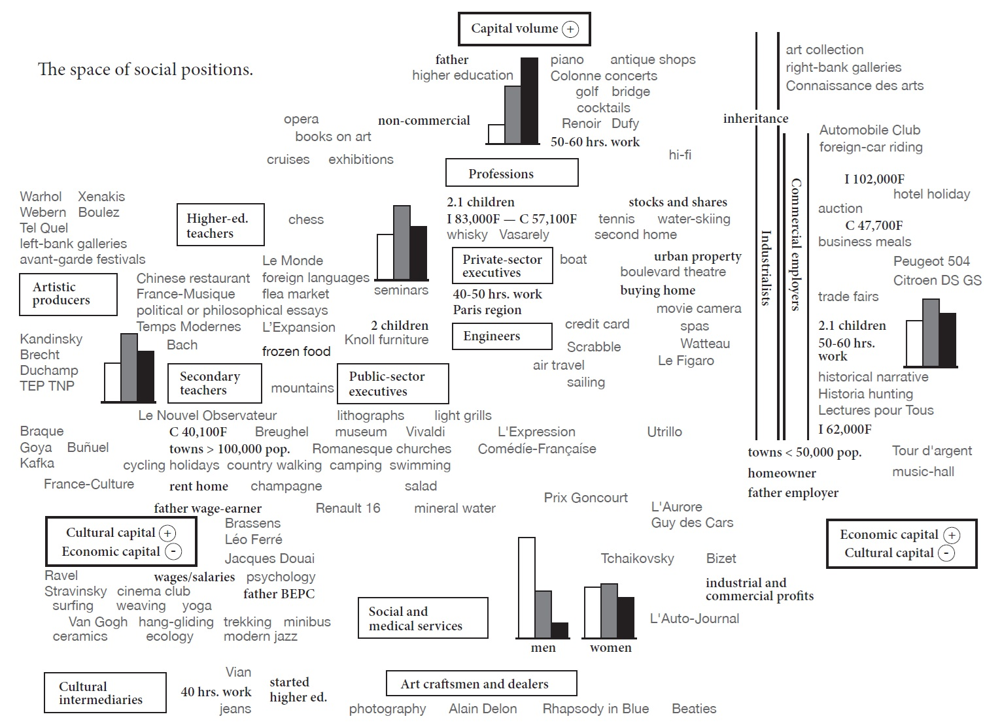
El Espacio Social de Bourdieu (La Desigualdad en el Espacio)
- El Gráfico: No es una línea de tiempo, sino un mapa. Posiciona a grupos e individuos en un espacio bidimensional.
- Eje Vertical: Volumen total de capital (económico + cultural).
- Eje Horizontal: Composición del capital (más cultural a la izquierda, más económico a la derecha).
- El Argumento Visual: Bourdieu argumenta que la desigualdad no es una simple jerarquía de ingresos. Es multidimensional y relacional. El gráfico muestra cómo los gustos y estilos de vida (música, arte, comida) no son meras preferencias personales, sino que estructuran el espacio social y reproducen las distinciones de clase.
Ver para argumentar
Savage (2021) señala que Piketty usa el tiempo para argumentar que el pasado está regresando. Bourdieu usa el espacio para argumentar que la desigualdad es más que solo económica.
En ambos casos, el gráfico no es una simple ilustración del texto. Es el núcleo de su argumento teórico.
La visualización, por tanto, es una forma de hacer sociología.
Veamos algunos otros ejemplos
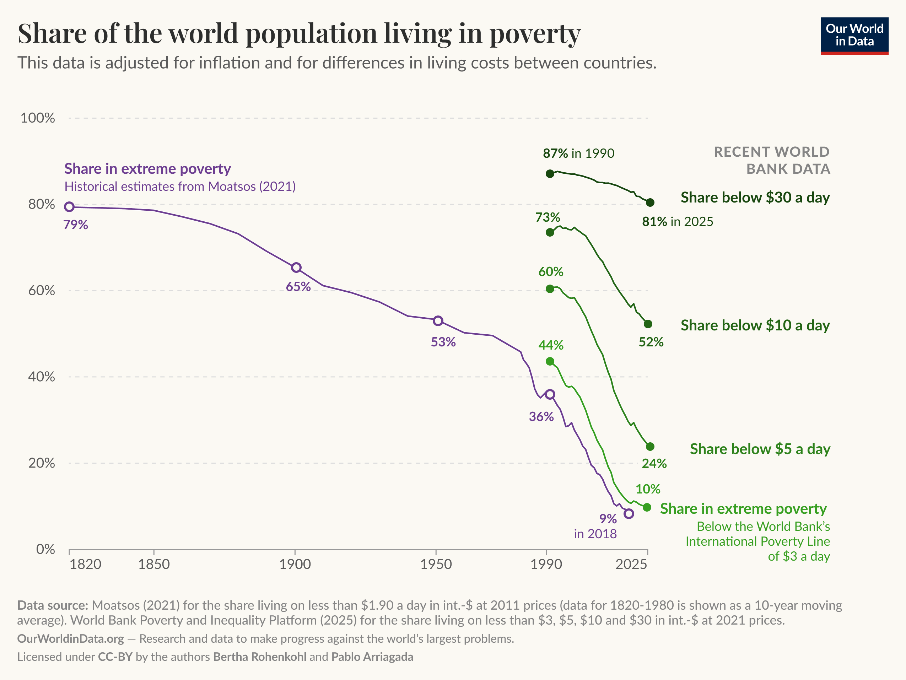
Veamos algunos otros ejemplos
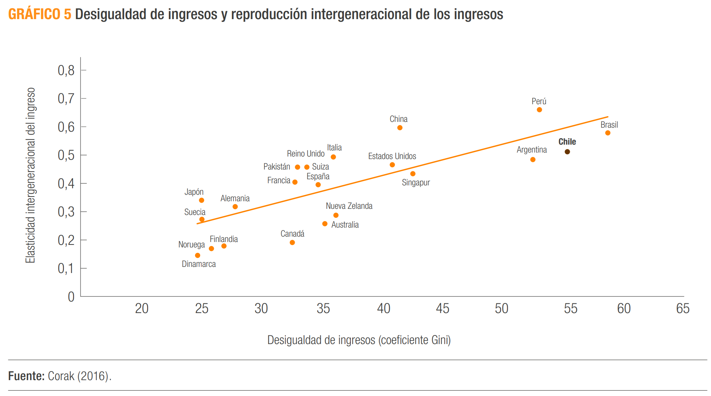
Veamos algunos otros ejemplos
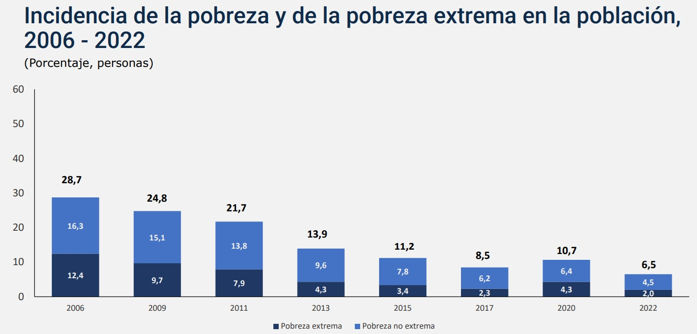
Veamos algunos otros ejemplos
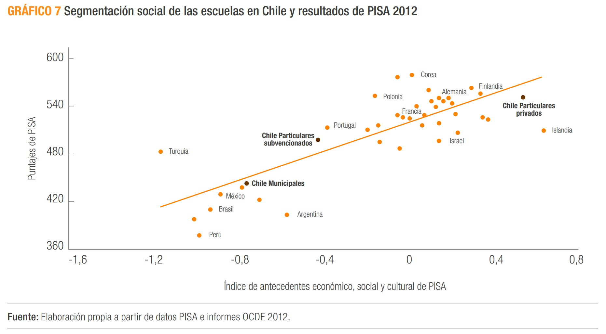
2. La Visualización como Diagnóstico Estadístico
El Engaño de los Estadísticos Descriptivos
Además de ser argumentos, los gráficos son herramientas de diagnóstico cruciales. Los estadísticos resumen por sí solos pueden ser idénticos para distribuciones radicalmente diferentes.
Ejemplo: “El Trío Engañoso”
Imaginemos tres grupos de datos con los siguientes estadísticos:
| Grupo | Media | Desv. Estándar |
|---|---|---|
| A (Notas de Examen) | 75.0 | 10.0 |
| B (Estaturas en cm) | 75.0 | 10.0 |
| C (Ingresos x10,000) | 75.0 | 10.0 |
Si solo miramos los números, podríamos pensar que las tres distribuciones son similares. Pero…
¡GRAFICA SIEMPRE TUS DATOS!
La visualización revela la verdadera estructura que los números ocultaban.
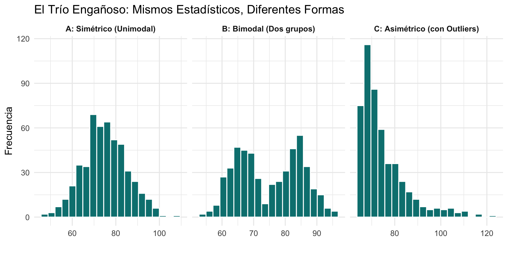
Lección: La visualización es el único modo de detectar la forma, la modalidad y la presencia de outliers. Es un paso no negociable del análisis de datos.
3. Mejores Prácticas en Visualización
Principios para Gráficos Claros y Honestos
Un buen gráfico no solo muestra datos, sino que cuenta una historia de forma clara, precisa y honesta.
- Maximizar la Razón “Tinta-Dato” (Edward Tufte):
- Cada elemento visual debe comunicar información. Evita “ruido” como fondos recargados, sombras, efectos 3D o colores que no aportan significado.
- Usar Títulos Informativos, no Descriptivos:
- Un buen título resume el principal hallazgo o la historia del gráfico.
- Mal título: “Gráfico de barras de ingreso por región”.
- Buen título: “El ingreso mediano en la RM es un 30% mayor que el promedio nacional”.
- Etiquetar Todo Claramente:
- Ejes (con sus unidades: $, años, %), leyendas, y siempre citar la fuente.
La Regla de Oro del Eje Cero
Los gráficos de barras (y de áreas) SIEMPRE deben empezar en cero.
Nuestros ojos interpretan la longitud o altura de la barra como proporcional a la cantidad que representa. Truncar el eje Y exagera las diferencias y es visualmente deshonesto.
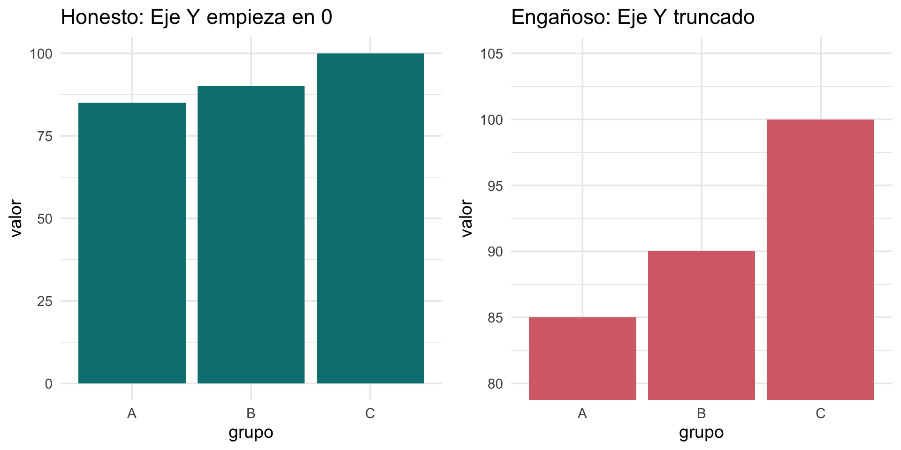
En el gráfico de la derecha, la barra C parece 3 o 4 veces más grande que la A, cuando la diferencia real es solo de un ~18%.
Elige el Gráfico Adecuado
No todos los gráficos sirven para todo. La elección de la geometría depende del tipo de variable(s) que quieres mostrar.
- Una variable categórica: Gráfico de Barras. Compara las frecuencias o porcentajes entre categorías.
- Una variable cuantitativa: Histograma (para ver la forma), Gráfico de Densidad (versión suavizada) o Boxplot (para el resumen de 5 números).
- No uses gráficos de torta (Pie Charts).
- Razón: El cerebro humano es muy malo para comparar ángulos y áreas, pero es excelente para comparar longitudes. La altura de las barras en un gráfico de barras es mucho más fácil de interpretar con precisión.
4. La Gramática de Gráficos con ggplot2
Un Sistema para Construir Gráficos en Capas
ggplot2 es un paquete de R que implementa la “Gramática de Gráficos”, una idea poderosa: en lugar de tener comandos rígidos para cada tipo de gráfico, tenemos un sistema de “bloques de construcción” que podemos combinar para crear cualquier visualización que imaginemos.
Un gráfico en ggplot2 es una superposición de capas.
Los 3 Componentes Esenciales
Toda visualización en ggplot2 se construye a partir de tres componentes fundamentales:
Datos (
data): Eldata.frameque contiene la información que queremos visualizar.Mapeos Estéticos (
aes): La conexión entre las variables de nuestros datos y las propiedades visuales (estéticas) del gráfico.aes(x = edad, y = ytotcorh, color = sexo)- Esto le dice a
ggplot2: “Usa la columnaedadpara el eje X,ytotcorhpara el eje Y, y asigna un color diferente para cada valor de la variablesexo”.
Geometrías (
geom): El objeto geométrico que usamos para representar los datos. Es la “forma” que toma nuestra visualización.geom_point(): para puntos.geom_bar(): para barras.geom_histogram(): para un histograma.
La Plantilla Universal de ggplot2
La sintaxis siempre sigue esta plantilla:
ggplot(data = <DATOS>, mapping = aes(<MAPEOS>)) + <GEOM_FUNCION>()
ggplot(...): Inicia el gráfico. Define la fuente de datos y los mapeos globales. Crea un lienzo en blanco con los ejes definidos, listo para recibir una geometría.+: El operador para añadir una nueva capa.geom_...(): Añade la capa de geometría que dibuja los datos en el lienzo.
Construyendo por Capas: Ejemplo
Paso 1: ggplot() crea el lienzo. Le decimos qué datos usar y qué variables mapear a los ejes. El resultado es un plano cartesiano vacío.
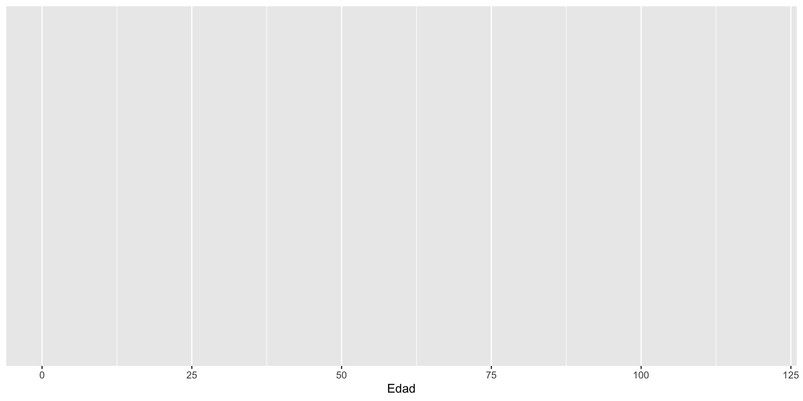
Construyendo por Capas: Ejemplo
Paso 2: + geom_histogram() añade la capa que dibuja. Le decimos que represente los datos mapeados como un histograma.
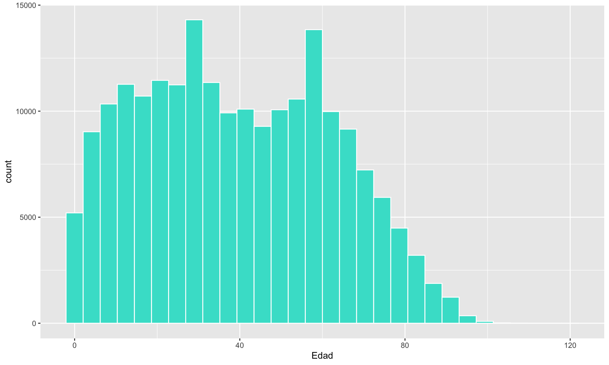
Mapear vs. Fijar
Este es el punto que causa más confusión al principio, pero es fundamental.
Mapear (DENTRO de aes()):
- El atributo visual depende de una variable.
- Se usa para que el gráfico represente información.
- Ejemplo:
r ... aes(color = sexo) ...Aquí, el color del punto dependerá de si el valor en la columnasexoes “Hombre” o “Mujer”.
Fijar (FUERA de aes()):
- Asigna un valor constante al atributo.
- Se usa para mejorar la estética.
- Ejemplo:
r ... geom_point(color = "blue")Aquí, todos los puntos serán azules, sin importar sus otras características.
Mapear vs. Fijar: Ejemplo Visual
Usemos el dataset mtcars para ver la diferencia de forma clara. Crearemos un gráfico de dispersión del peso (wt) vs. el rendimiento (mpg) de los autos.
Mapeando color a la variable cyl (cilindros)
Aquí, el color representa información: nos dice cuántos cilindros tiene cada auto.
Ampliando la Gramática: Faceting (Small Multiples)
El Problema: ¿Qué pasa si queremos comparar la distribución del ingreso a través de las 16 regiones de Chile? Mapear 16 colores a una estética se vuelve un caos visual.
La Solución: El Faceting (facet_wrap() o facet_grid())
Consiste en crear una grilla de gráficos más pequeños, donde cada panel muestra un subconjunto de los datos. Es una de las herramientas más poderosas de ggplot2 para el análisis exploratorio.
Faceting en Acción
Ahora, usemos facet_wrap() para comparar la distribución del rendimiento (mpg) para cada tipo de cilindro (cyl). En lugar de usar colores en un solo gráfico, creamos un panel para cada categoría.
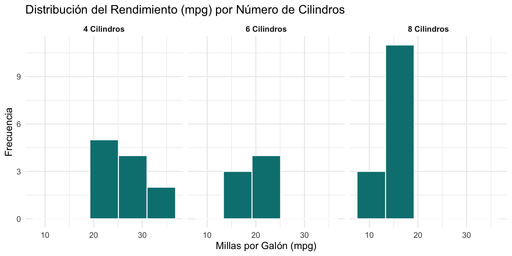
Cierre y Próximos Pasos
Resumen de la sesión de hoy:
- La visualización es una forma de argumento sociológico y una herramienta de diagnóstico estadístico indispensable.
- Crear gráficos efectivos y honestos requiere seguir buenas prácticas.
ggplot2usa una “Gramática de Gráficos” que nos permite construir visualizaciones complejas añadiendo capas (data,aes,geom).- El faceting es una técnica clave para comparar distribuciones a través de múltiples categorías.
En el práctico de hoy:
- Aplicarán estos principios para diagnosticar datos, construir sus primeros gráficos con
ggplot2desde cero y usarfacet_wrappara análisis comparativos con la CASEN 2022.
Adelanto de la Unidad 5:
- En la próxima unidad, dejaremos el análisis univariado y nos adentraremos de lleno en el análisis bivariado: cómo describir la relación entre dos variables.